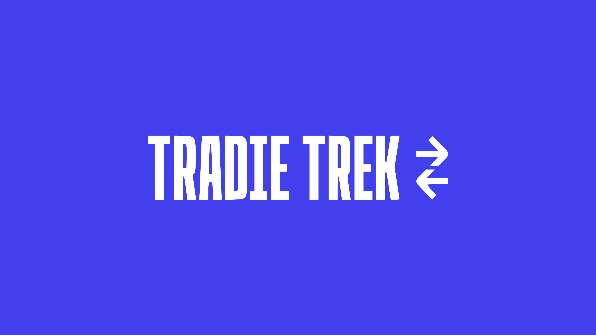
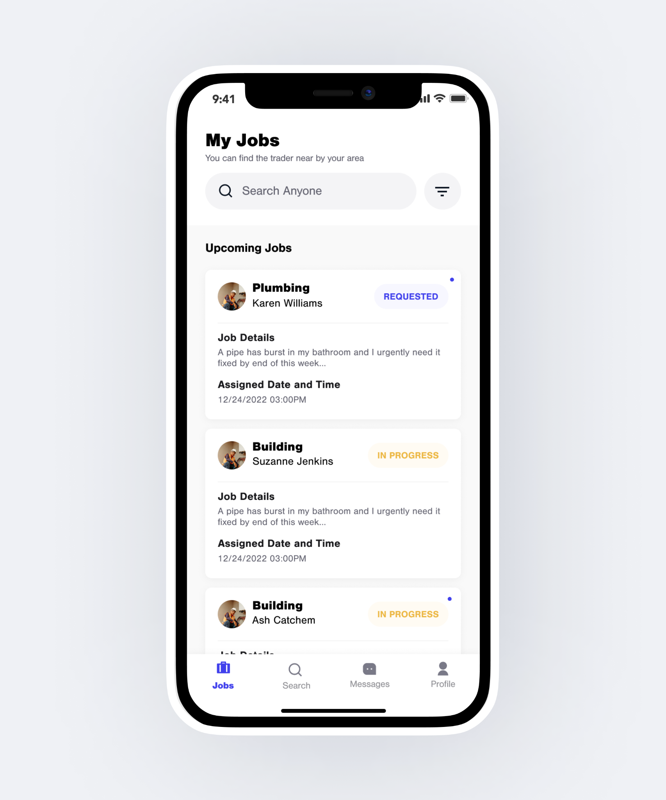
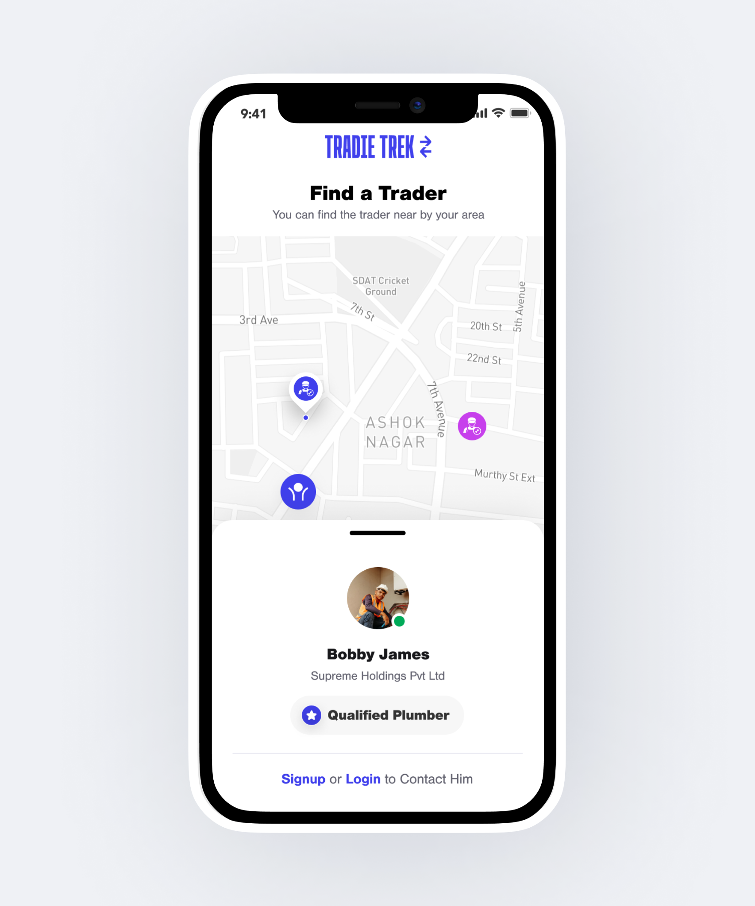
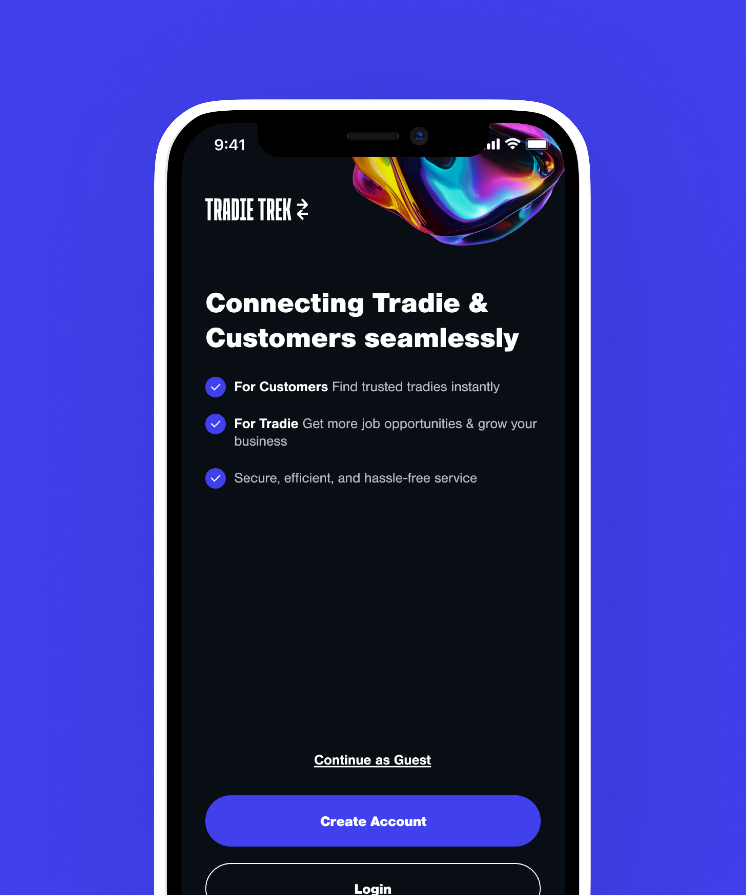
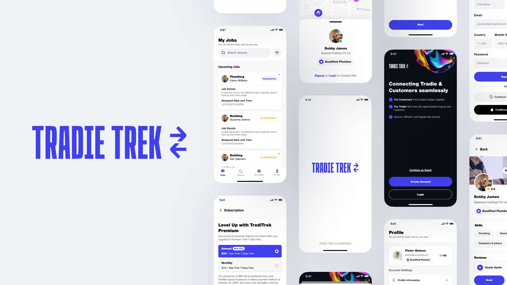

Tradie Trek
A digital product experience designed to make everyday work simpler, clearer and easier to manage.
Trade / Services
Mobile product
Product Designer
2026

Turning a complex workflow into a product that feels effortless.
Tradie Trek brings essential tasks into one focused experience. The design direction prioritises clarity, fast navigation and a system that can grow without becoming difficult to use.
Make everyday tasks feel lighter.
The core challenge was organising multiple workflows without overwhelming the user. The experience needed a strong hierarchy, predictable interaction patterns and enough flexibility for different types of work.


Structure first.
Polish second.
I started by simplifying information architecture and defining the key journeys. Reusable patterns then created consistency across navigation, actions, forms and content—giving the visual layer a strong foundation.

A visual language built to scale.
A focused component system keeps screens consistent while allowing the product to evolve. Typography, spacing, states and interaction behaviours work together as one system rather than isolated screens.



A clearer experience with room to grow.
The resulting direction creates a simpler path through everyday tasks, a more coherent interface and a reusable design foundation for future features.